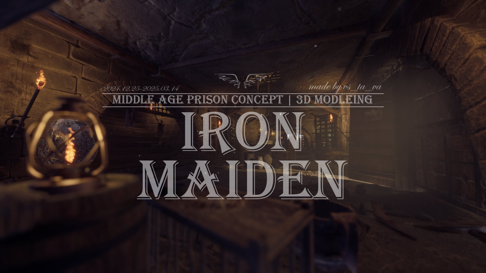
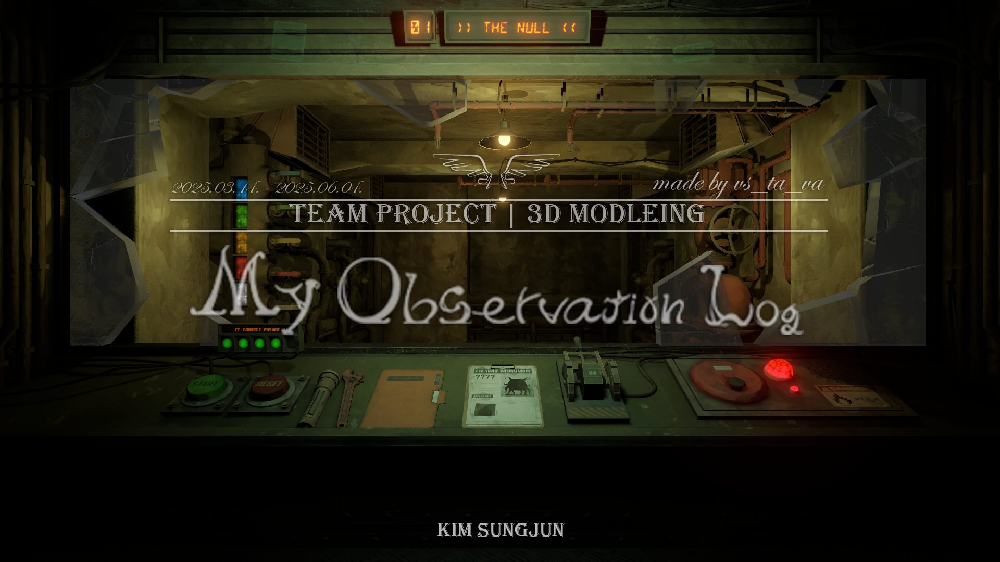

Portfolio
3D Environment Artist · AI Pipeline
홀로 빛나는 아티스트를 넘어서,
팀과 함께 성장하며 시너지를 내는 3D 배경 아티스트입니다.
졸업 후 4인 팀 프로젝트. 3D 배경 그래픽을 중심으로 배경 모델링·라이팅·머티리얼 세팅을 담당하며 최적화와 몰입감을 동시에 고려했습니다.
실내 배경 작업. 라이팅의 분위기 조성과 명암 대비에 집중하고, 머티리얼 및 아틀라스 작업을 통해 적은 텍스처로 다양한 오브젝트를 구현했습니다.
가우디의 미완공 건축물을 자료 조사와 창작 해석을 바탕으로 재구성한 환경 디자인 프로젝트. 실제 건축 구조와 예술적 표현 사이의 균형을 고민하며 게임 환경에 최적화했습니다.
군 입대 전, 단기간이지만 'IQ 비타민'에서 인턴으로 근무하며 아동 심리 기반 도서의 삽화 제작을 맡았습니다. 원화 자료를 바탕으로 벡터 기반 일러스트 작업을 수행하면서, 색감 조율·형태 단순화·시각적 전달력 등을 고려하는 훈련을 했습니다.
이 경험을 통해 Photoshop 운용 능력과 함께, 제한된 리소스 안에서 효율적으로 결과물을 완성하는 법을 배웠습니다. 또한 실제 출판 과정에 참여하여, 프로젝트 일정 관리와 피드백 반영 과정을 경험한 것도 큰 자산이 되었습니다.
특히 이 과정에서 익힌 색채 감각과 조형 이해력은 이후 3D 작업에서 손맵 텍스처 제작, 아틀라스 정리, 텍스처 수정 등에 강점으로 작용했습니다. 아래는 정식 출판된 동화책 관련 링크입니다.
출판된 동화책 보기카드를 클릭하면 상세 페이지(이미지+설명)가 중앙에 열립니다.

클릭하여 작품 보기 →
클릭하여 작품 보기 →경험 간단 설명
주 내용들
경험 간단 설명
주 시도들
경험 간단 설명
주 시도들
프로젝트 간단 설명
주 시도들
경험 간단 설명
주 시도들
경험 간단 설명
주 시도들
경험 간단 설명
주 시도들
경험 간단 설명
주 내용들
경험 간단 설명
주 내용들
경험 간단 설명
주 내용들
경험 간단 설명
주 시도들
저는 배경이 단순한 오브젝트가 아닌 감정과 이야기를 전달하는 매개체라고 생각합니다. 이러한 관점은 대학 시절 언론 기구에서 영상 편집 기자로 활동하며 형성되었습니다. 기획부터 촬영, 편집까지 전 과정에 참여하며, 단순한 정보 전달을 넘어 감정을 전달하는 콘텐츠의 중요성을 깨달았습니다.
이후 'IQ 비타민' 인턴으로 아동 심리 기반 도서 삽화를 제작하며 색감과 조형 감각을 익혔고, 이는 3D 배경 제작 시 텍스처 표현에 강점으로 이어졌습니다. 또한 4인 팀 프로젝트 'M.O.L.'에서는 2D 캐릭터와 3D 배경의 조화를 고려한 아트 방향을 조율하며 협업 경험을 쌓았습니다.
이처럼 다양한 경험을 통해 '감정을 전달하는 공간'에 대한 기준을 확립했으며, 이를 바탕으로 사용자에게 몰입감 있는 경험을 제공하는 3D 배경 아티스트로 성장하겠습니다.
저의 가장 큰 강점은 기술 구조에 대한 이해력입니다. 저는 새로운 기술을 접할 때 결과물보다 작동 원리를 파악하는 데 집중하며, 이를 통해 문제를 빠르게 분석하고 해결하는 능력을 길러왔습니다.
이러한 강점은 팀 프로젝트 'M.O.L.'에서 발휘되었습니다. 2D 캐릭터와 3D 배경이 혼합된 환경에서 머티리얼 파라미터, 텍스처 감도, 라이팅 밸런스를 조정하며 시각적 통일성을 개선했습니다. 또한 협업 과정에서 발생한 그래픽 오류의 원인을 구조적으로 분석해 수정 방향을 제시하며, 안정적인 제작 환경을 만들었습니다.
이 과정에서 원활한 협업을 위해 커뮤니케이션 역량도 함께 발전시켰습니다. 언론기구 활동과 인턴, TA 경험을 통해 다양한 직군과의 기준을 조율하고 기술적 내용을 쉽게 전달하는 방법을 익혔으며, 이는 팀 내 의사소통 속도를 높이고 작업 완성도를 향상시키는 데 기여했습니다.
이처럼 기술 이해와 협업 경험을 바탕으로 팀 전체의 효율과 완성도를 높이는 아티스트로 기여하겠습니다.
저는 졸업 작품 발표에서 "AI는 지브리의 그림체를 재현할 수 있지만, 지브리를 대체할 수 없다"는 테제를 설정하고, 이를 증명하기 위해 신입생 인터뷰, 교수 TA 활동, 총장님 초청 발표까지 직접 행동으로 이어갔습니다. 당시 저는 인간 고유의 신념과 스토리가 AI가 넘어설 수 없는 영역이라고 믿었습니다.
그러나 취업 준비 과정에서 AI 기술이 빠르게 변화하고 있음을 뒤늦게 인지했고, 과거의 가치관에 머물렀던 스스로를 돌아보게 되었습니다. 그 전환점은 RAG 기반 AI를 처음 접한 순간이었습니다. 내가 알던 AI는 이미 과거에 머물러 있었고, 활용 가치는 전혀 다른 차원으로 이동해 있었습니다.
이후 파인튜닝, A2A 방식, 멀티 AI 파이프라인 등을 직접 학습하며 새로운 결론에 도달했습니다. 미래에 AI를 잘 활용하는 사람은 프롬프트를 잘 쓰는 사람이 아닙니다. 프롬프트조차 AI가 더 잘 쓸 수 있기 때문입니다. 진정한 강점은 다양한 AI를 연결해 시스템과 파이프라인을 구축하고, 그 방향성을 디렉팅하며 결과에 책임을 지는 것에 있다고 생각합니다.
인간의 역할은 AI의 결과를 그대로 수용하는 것이 아니라, 그 안에 불완전함과 감정을 의도적으로 개입시켜 보다 공감 가능한 방향으로 조정하는 데 있습니다. 이것이 제가 생각하는 AI 시대 인간의 변칙성이며, 3D 배경 아티스트로서 제가 지향하는 방향성입니다.
AI 기술이 발전하더라도 게임의 완성도는 결국 사람 간의 협업에서 나온다고 생각합니다. 저는 기술 구조 이해와 커뮤니케이션 역량을 바탕으로 팀 내 협업 효율을 높일 수 있는 아티스트입니다. 입사 초기에는 팀의 작업 방식과 파이프라인을 빠르게 이해하고, 실무 프로세스에 맞는 작업 기준을 익히며 안정적으로 프로젝트에 기여하겠습니다.
이러한 역량을 더욱 발전시켜, 협업 과정에서 발생하는 문제를 능동적으로 해결하는 역할을 수행하겠습니다. 작업 중 발생하는 그래픽 오류나 비효율적인 공정을 구조적으로 분석하고 개선 방향을 제시하겠습니다. 또한 기획자, 프로그래머 등 다양한 직군과의 협업 과정에서 작업 의도를 명확히 전달하고 피드백을 빠르게 반영하여 프로젝트 완성도를 높이겠습니다. 나아가 AI를 포함한 다양한 기술을 적극 활용하되, 그 안에 인간만의 신념과 스토리를 더해 팀과 함께 의미 있는 결과물을 만들어가겠습니다.